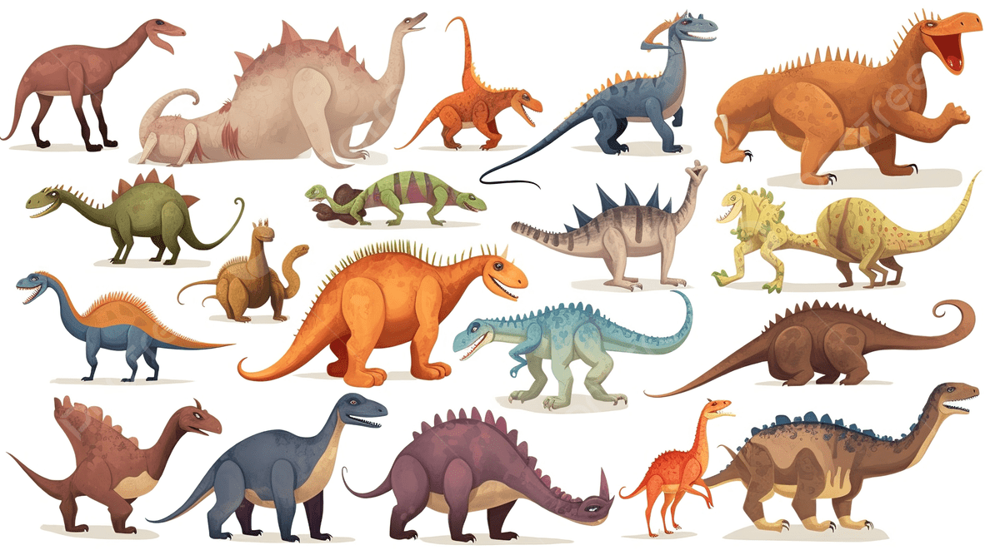

Mensaje urgente
Mensaje urgente para los exploradores y exploradoras de esta misión:
Esta mañana hemos recibido una señal desde un lugar desconocido.
Necesitamos tu ayuda para investigar qué está ocurriendo. Para ello, tendrás que observar con atención, escuchar, describir y comunicar todo lo que descubras.
En esta primera misión, tres dinosaurios muy diferentes han sido vistos por una nueva zona. Tu tarea será encontrarlos y averiguar cómo son.
Escucha atentamente: "En un valle lleno de plantas gigantes, aparece un dinosaurio enorme de color naranja. Es el Tiranosaurio Rex. Tiene una cabeza muy grande, dientes afilados y camina haciendo mucho ruido. Abre la boca como si estuviera rugiendo.
Un poco más lejos, cerca de unas plantas, hay un dinosaurio más bajo y ancho. Es el Triceratops. Su cuerpo es fuerte, tiene una gran cabeza con forma redondeada y parece tranquilo. No corre, se mueve despacio y observa todo a su alrededor.
De repente, entre los árboles, aparece un dinosaurio más pequeño y rápido. Es el Velociraptor. Tiene el cuerpo delgado, es de color verde-azulado y parece muy ágil. Se mueve rápido y mira todo con mucha atención"
-
Observa la imagen para encontrar los dinosaurios que aparecen en la historia que has escuchado
